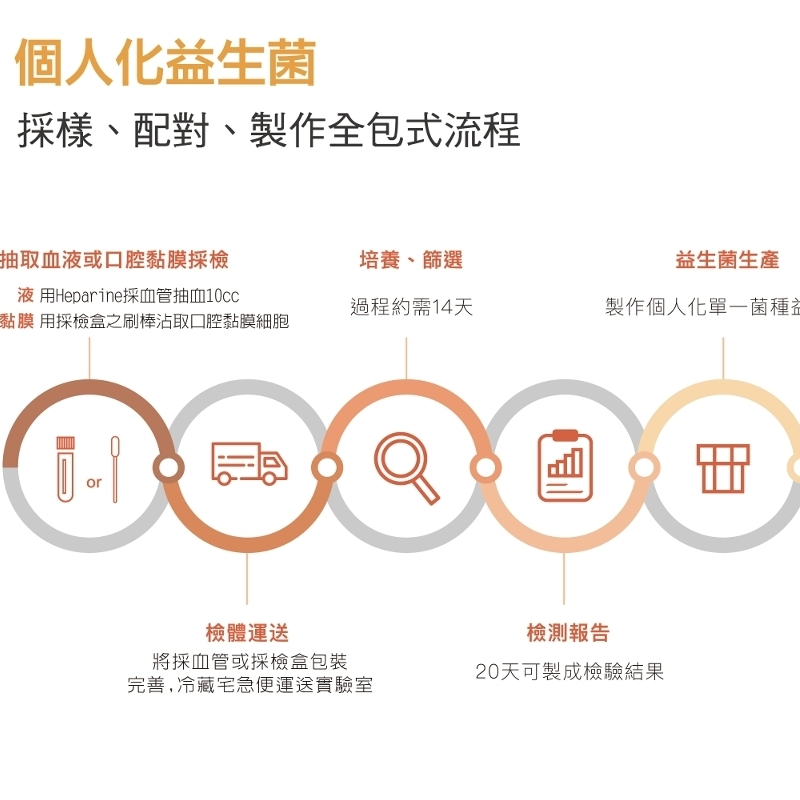
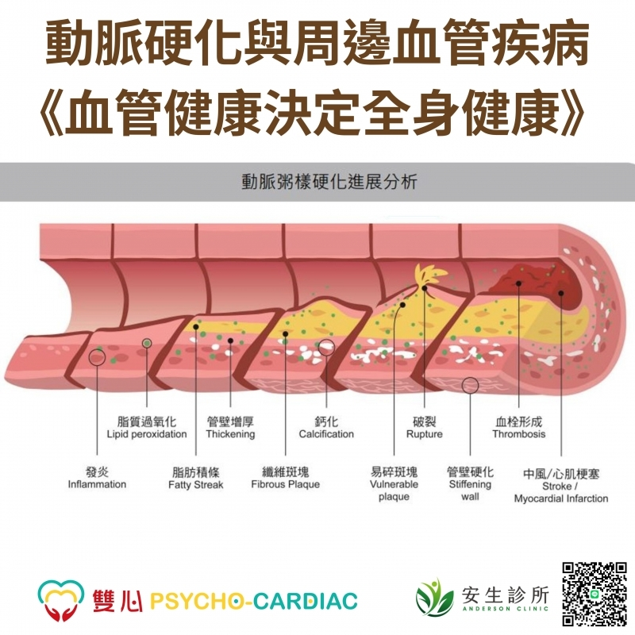
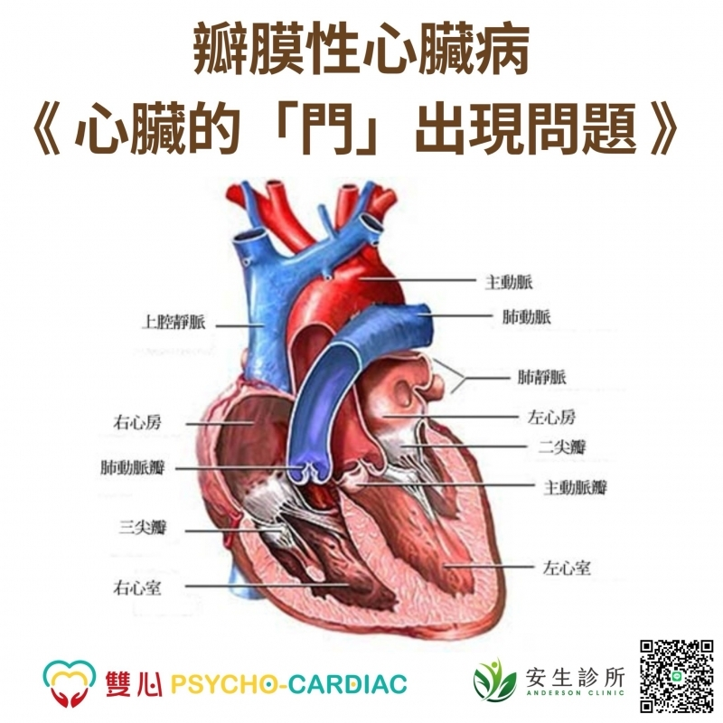

你知道腸道是眾多免疫細胞聚集的地方嗎？令人感到驚訝的是，70%的免疫細胞是在腸道內生成的...

動脈硬化是血管隨著脂肪堆積與慢性發炎而逐漸變硬、變窄的過程。
專業醫療級減重設計，採用新一代減重趨勢—猛健樂（Tirzepatide）...

心臟內共有四個瓣膜，負責控制血液單向流動，如同開關門的機制。
專長心血管抗衰老自律神經一般內科體重管理
專長精準醫學腫瘤免疫學功能醫學抗衰老醫學再生醫學癌症輔助治療預防保健
專長系統抗老化醫學雙心整合醫學自律神經調節高級心臟救命術美式點滴醫學再生醫學諮詢癌症營養調理
專長一般內科醫學心臟血管內科重症醫學心腦血管整合抗衰老預防醫學功能性營養醫學自律神經調理分子矯正點滴療法